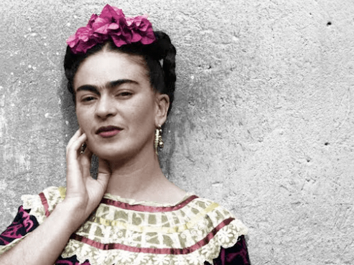
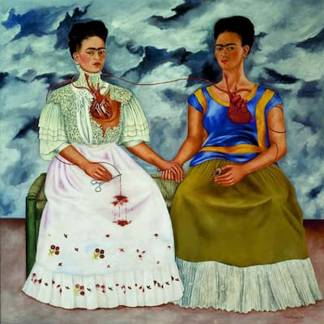
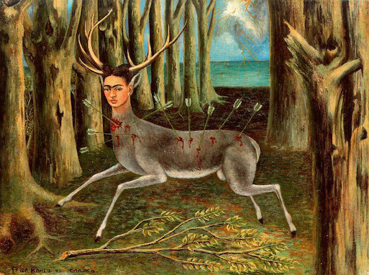
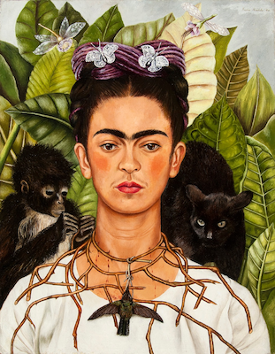
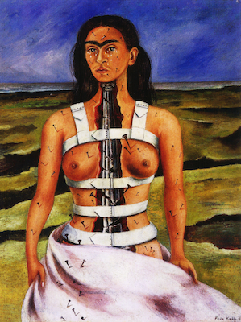
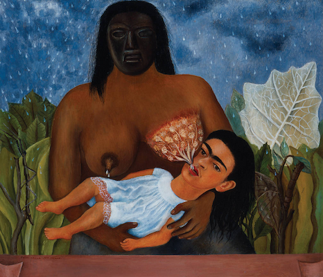

"El arte más poderoso de la vida, es hacer del dolor un talismán que cura." Frida Kahlo.
Obras destacadas

Las dos Fridas (1949).

El Venado Herido (1946).

Autorretrato con collar de espinas (1940).

La columna rota (1944).

Mi nana y yo (1937).
Los ojos de Frida (1948).